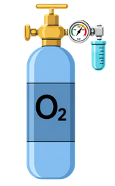
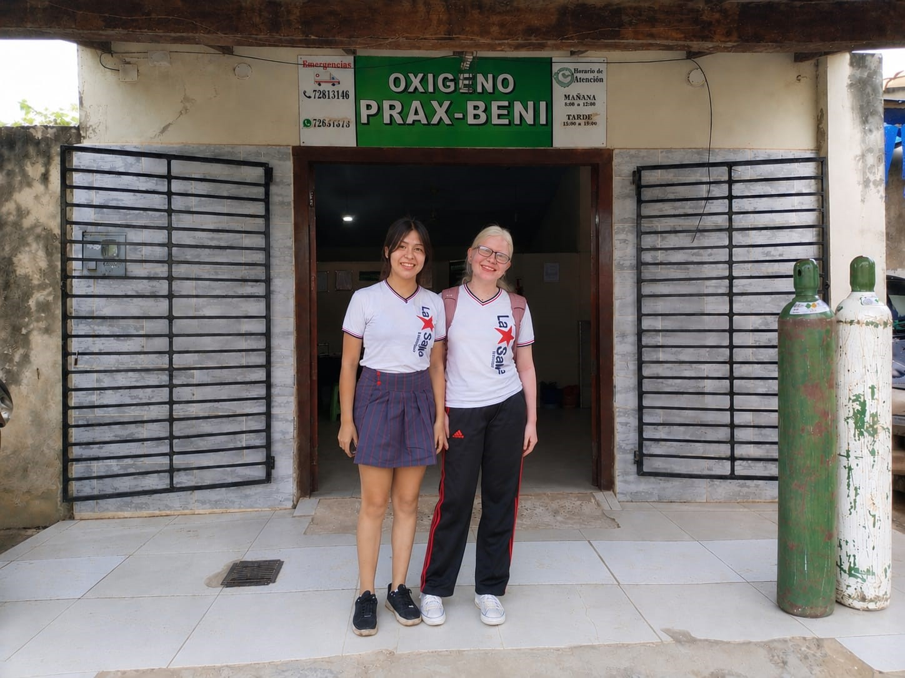

Producto principal
Tanque de oxígeno
Tamaño único: 6 m³, con unos 6.000 litros de oxígeno. Tanques certificados, para uso en hospitales o a domicilio.
240 Bs por tanque
Tanques de 6 m³ (unos 6.000 litros) para hospitales y hogares. Aquí ves precios, tamaño y cómo usarlos con seguridad antes de comprar.

Lo que de verdad vendemos. El tanque de oxígeno es nuestro producto principal.
No encontramos resultados. Prueba con otra palabra o llámanos.
Tamaño único: 6 m³, con unos 6.000 litros de oxígeno. Tanques certificados, para uso en hospitales o a domicilio.
Material de uso médico de buena calidad.
Consultar precio
Insumos de uso hospitalario.
Consultar precio
Con efectividad de hasta el 70 %.
Consultar precio
Elige cuántos tanques necesitas y mira el total en bolivianos y en litros de oxígeno.
Total a pagar
240 BsOxígeno en total
6.000 L6 m³ · 240 Bs por tanque. La entrega a domicilio tiene costo extra.
Un tanque mal usado es un riesgo. Esto es lo básico que debes saber.
Se usa en emergencias de salud o por indicación médica. Usarlo de más puede afectar la salud, por eso se usa con moderación. Si notas señales leves de que algo falla al respirar, no las ignores: consulta a un médico.
Muchas personas no lo saben. Antes de usarlo en casa, pide la indicación de tu médico.
Revisa el manómetro (el reloj de presión) del tanque. Hazlo con regularidad: en nuestra encuesta, la mayoría de las personas no revisa cuándo se les va a acabar el oxígeno.
Llévalo firme y sin golpes, y no lo dejes rodar. Si prefieres, lo llevamos a tu domicilio dentro de Trinidad.
Lejos de fuentes de calor y en un lugar ventilado.
Los niños son curiosos. Guarda el tanque fuera de su alcance para evitar accidentes.
Se usa por salud o por deporte. Los hospitales lo necesitan, y en casa se elige el tamaño según la comodidad y el uso. Nuestro tanque es de 6 m³ (unos 6.000 litros). Cuando busques información en internet, revisa la fecha y compara fuentes: no todo lo que se publica es cierto.
Ante cualquier duda sobre tu caso, consulta a un médico o llámanos antes de usar el tanque.
Somos una empresa de Trinidad, Beni, que vende oxígeno medicinal y material de uso médico. Atendemos sobre todo a hospitales, y también a quienes necesitan un tanque en casa.
Creamos este sitio para que sepas qué vendemos, a qué precio y cómo usarlo bien. Si prefieres hablar con una persona, el vendedor te atiende directamente.
En la sede: pasa a comprar tu tanque.
A domicilio: entregamos solo dentro de Trinidad. Tiene un costo extra por el combustible.
Ven a la sede a comprar tu tanque o pide la entrega a domicilio dentro de Trinidad.
C. Piraquina, esq. Av. Sirari
Trinidad, Beni, Bolivia
Lunes a sábado, 08:00 a 18:00
Abrir en Google Maps
De lunes a sábado, de 08:00 a 18:00.
Solo uno: 6 m³, con unos 6.000 litros.
240 Bs cada uno. Para los demás productos, consulta el precio.
Sí, solo dentro de la ciudad de Trinidad y con un costo extra por combustible.
Sí. Vendemos a hospitales y a particulares.
Mostramos solo lo que de verdad vendemos. Si algo te genera dudas, habla directo con el vendedor.
Vendedor: Teléfono por completar
Dirección: C. Piraquina, esq. Av. Sirari, Trinidad, Beni, Bolivia
Horario: lunes a sábado, 08:00 a 18:00
Llama para pedir un tanque, solicitar el envío o resolver tus dudas.